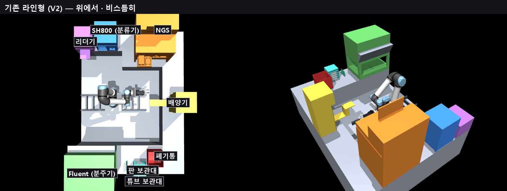
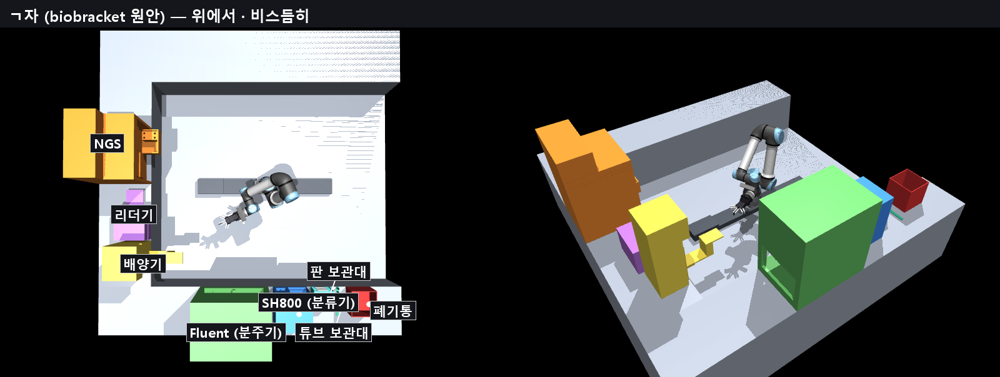
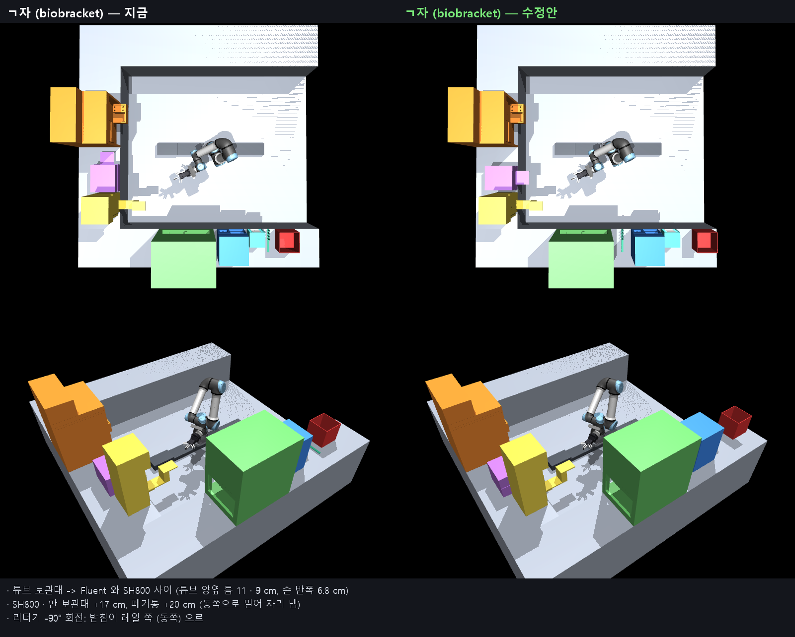
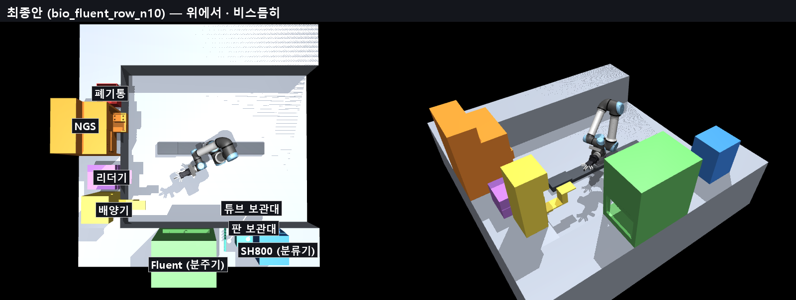
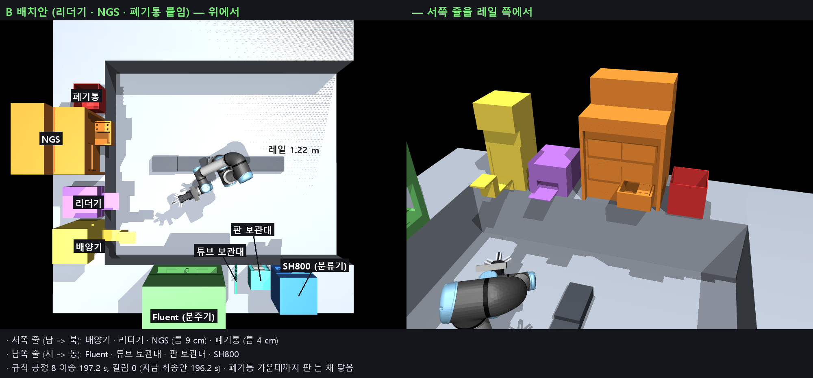

새 ㄱ자 작업대 (biobracket) 에서 장비 배치를 확정했다. 기존 라인형 배치 (V2) 와 같은 로봇 · 같은 공정 · 같은 규칙으로 공정 시간을 재서 비교하고, 수정안 여러 개를 같은 방법으로 비교해 최종안을 골랐다. 최종안에서 13 단계 공정을 물리로 끝까지 실행해 확인했다.
한동대학교 기계제어공학부 · 산업지능화 연구실
두 배치에 같은 로봇과 같은 공정을 넣고, 장비 안 동작과 장비 사이 운반을 규칙으로 계획해 걸리는 시간을 쟀다. 장비 사이 운반 시간만 배치에 따라 달라지고, 장비 안 동작 (집기 · 꽂기 · 빼기) 은 거의 같다.
| 항목 | 값 |
|---|---|
| 로봇 | UR5e + 레일 + 표준 RG2 (플랜지 직결) + 손목 D455 |
| 공정 | process_day_v11 의 로봇 이송 8 번 (판 4 · 튜브 4, 폐기는 제외) |
| 속도 | 레일 0.3 m/s, 관절 1.2 rad/s, 장비 안 수평 4 cm/s · 수직 2 cm/s, 사진 0.5 s × 이송당 5 장 |
| 실물 관절 요건 | J1 이 케이블 쪽을 지나지 않음, 팔꿈치 위, J5 90 ± 75°, J6 고정, 90° 넘게 돌 때는 팔을 당긴 운반 자세에서 |
| 충돌 | 장비 메시 (복셀) 와 로봇 · 든 물체, 경로 전체를 IK 로 따라가며 검사 |
| 레일 | 라인형 이동 0.75 m, ㄱ자 이동 1.03 m (레일 1.22 m) |
처음 비교 (11/03) 는 관절 요건 없이 해서 라인형 226.7 s, ㄱ자 239.1 s 가 나왔지만, 로봇이 한 바퀴 도는 등 실물에서 못 하는 동작이 섞여 있었다. 위 요건을 넣고 다시 비교한 값을 아래에 쓴다.


| # | 이송 | 라인형 | ㄱ자 원안 | 최종안 |
|---|---|---|---|---|
| 1 | 판 Fluent → 배양기 | 20.2 | 22.4 | 22.4 |
| 2 | 판 배양기 → 리더기 | 20.1 | 18.0 | 16.9 |
| 3 | 판 리더기 → Fluent | 23.1 | 25.6 | 25.3 |
| 4 | 튜브 보관대 1 → Fluent | 25.4 | 29.2 | 26.2 |
| 5 | 튜브 Fluent → SH800 오른쪽 | 29.7 | 25.6 | 26.8 |
| 6 | 판 SH800 왼쪽 → Fluent | 26.3 | 23.2 | 24.4 |
| 7 | 튜브 보관대 2 → Fluent | 26.8 | 29.2 | 26.2 |
| 8 | 튜브 Fluent → NGS | 30.8 | 29.4 | 29.1 |
| 합계 | 202.5 | 202.5 | 197.2 | |
| 장비에 걸림 | 21 건 | 4 건 | 0 건 |
두 배치의 시간은 같았다. 그래서 장비가 한쪽 (서 · 남) 에만 있어 고치기 쉬운 ㄱ자를 기준으로 배치를 고쳐 나갔다. 라인형은 장비를 레일 양옆으로 모아 봤지만 오히려 느렸다 (3 장).
| 안 | 바꾼 것 | 8 이송 | 걸림 | 폐기통 가운데 | 결과 |
|---|---|---|---|---|---|
| ㄱ자 원안 | — | 202.5 | 4 | — | 튜브 보관대 2 번 칸 막힘 |
| ㄱ자 수정안 | 튜브 보관대를 Fluent–SH800 사이로, SH800 · 판 보관대 +17 cm, 폐기통 +20 cm, 리더기 −90° 회전 | 196.2 | 0 | 안 닿음 | 가장 빠르지만 폐기통이 레일 끝에서도 3 cm 모자람 (11/04 확정 → 11/05 변경) |
| 수정안 + 레일 서쪽 10 / 20 / 30 cm | 레일 · 로봇을 서쪽으로 | 195.7 / 197.5 / 196.2 | 0 / 있음 / 있음 | — | 20 · 30 cm 는 Fluent → NGS 운반이 NGS 에 걸림. 효과 없음 |
| 라인형 양옆 | 배양기를 남쪽 줄로, 판 보관대 · 폐기통 +31 cm, NGS −18 cm | 205.7 | — | — | 배양기 → 리더기에서 180° 돌아 오히려 느림 |
| SH800 서쪽 줄 | NGS 를 리더기 옆, SH800 을 NGS 옆으로 | 204.2 | 2 | 닿음 | Fluent 와 SH800 이 반대편이 되어 +8 s, SH800 튜브 놓기 · NGS 운반 걸림 |
| A: 폐기통만 서쪽 | ㄱ자 수정안에서 폐기통을 서쪽 선반 NGS 북쪽으로 | 196.2 | 0 | 닿음 | 판 보관대가 Fluent 옆이 아님 |
| B: 남쪽 줄 재배치 | A + 남쪽 줄을 Fluent · 튜브 보관대 · 판 보관대 · SH800 순으로, 리더기 −90° | 197.4 | 0 | 닿음 | 보관대 둘 다 Fluent 옆 |
| B + 10 cm (최종) | 리더기 · NGS · 폐기통을 10 cm 붙임 (리더기–NGS 틈 19 → 9 cm) | 197.2 | 0 | 닿음 | 채택 |
| B + 17 cm | 바짝 붙임 (틈 2.4 cm) | 196.9 | 1 | 닿음 | Fluent → NGS 운반이 NGS 랙에 걸림 |

레일을 옮기는 것도 효과가 없었다. 남은 운반 시간은 큰 회전 두 번 (리더기 → Fluent, Fluent → NGS) 에서 나오고, 장비 안 동작 136 s 는 배치와 상관없이 고정이라 배치로 줄일 수 있는 양은 몇 초뿐이다.


8 이송 197.2 s 로 라인형 (202.5 s) 보다 5.3 s 빠르다. 가장 빠른 ㄱ자 수정안 (196.2 s) 과는 1 s 차이다.
실물 관절 요건과 장비 메시 충돌을 넣은 계획에서 걸림 0 건. 라인형 21 건, ㄱ자 원안 4 건.
폐기통을 서쪽 선반 NGS 북쪽으로 옮겨, 레일 시작 근처 (0.06~0.10 m) 에서 판을 든 채 통 가운데 위까지 부딪히지 않고 들어간다. 남쪽 줄 끝에 있을 때는 레일 끝까지 뻗어도 3 cm 모자랐다.
튜브 보관대와 판 보관대가 둘 다 Fluent 바로 옆이다. 공정 대부분이 보관대 ↔ Fluent 이송이라 짧은 운반이 많아진다. 대신 SH800 이 동쪽으로 37 cm 가서 Fluent ↔ SH800 이송이 0.5~0.7 s 늘었다.
리더기 · NGS · 폐기통을 10 cm 붙여 서쪽 줄을 모았다 (197.4 → 197.2 s). 17 cm 붙이면 NGS 가 레일에 너무 가까워져 Fluent → NGS 운반이 NGS 랙에 걸린다.
원안에서는 리더기 받침이 NGS 와 리더기 몸체 사이에 끼어 15° 비스듬히만 들어갔다. 돌려서 받침이 레일 쪽을 보게 하니 곧게 들어간다.
손목 D455 로 보는 자세도 확인했다 (ㄱ자 수정안 기준). 공정 사진 자세는 손 기준 상대 위치가 같아 라인형과 결과가 같았고 (32 장 중 22 장), 장비를 보는 자세는 ㄱ자 6/6 자리, 라인형 4/6 자리에서 찾았다. 자세 후보를 넓히면 라인형도 모두 찾아져 카메라 쪽 차이는 작다.
최종안에서 이송 10 번과 폐기 3 번을 합친 13 단계 공정을 규칙 기반으로 계획하고 물리 시뮬레이션으로 끝까지 실행했다. 이번 단계는 장비 · 물체 위치를 정답으로 쓴다.
| 항목 | 결과 |
|---|---|
| 13 단계 성공 | 13/13 |
| 놓인 위치 오차 | 0.3 mm 이하, 기울기 0° |
| 공정 시간 | 364.9 s (폐기 3 번 포함) |
| 레일과 팔 | 레일이 다 움직여 선 뒤 팔이 움직인다. 장비 안 동작과 놓기 전 손 보정은 팔만 쓴다. |
| 폐기 | 통 위 20 cm 에서 내려가 3 cm 위에서 놓기. 판 · 튜브 모두 통 안에 들어감 |
이 과정에서 고친 것: 운반 중 든 튜브가 선반 모서리를 0.8 mm 파고드는 경로를 충돌 판정이 통과시켜, 운반 경로에 든 물체와 선반 사이 여유 1 cm 를 넣었다.